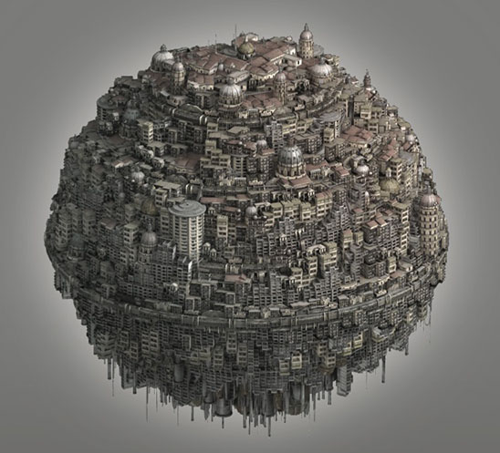

2016년 5월 28일
어떤 이들은 운명적으로 형용사가 될 수밖에 없는 존재들이다. 한 번도 읽어본 적 없는 데이비드 흄(David Hume)의 책을 집어 들어도, 그 아이디어와 문체가 '흄적(Humean)'이라는 사실을 쉽게 알아챌 수 있다. 톨킨(Tolkien)이 쓴 모든 글은 단순한 동어반복이 아닌 의미에서 '톨킨적(Tolkienesque)'이다. 그렇다고 해서 이 두 작가가 지루하다는 뜻은 아니다. 오히려 그 반대다. 그들은 찬란하고 다양한 아이디어들을 쏟아냈다. 하지만 그 둘의 근저에는 정의하기 어렵지만 매우 일관된 에토스가 자리 잡고 있었다. 두 작가 모두 지극히 자기다웠던 것이다.
로빈 핸슨(Robin Hanson)은 내가 아는 그 누구보다도 '가장 그 자신다운' 사람이다. 그는 분명히 천재적이다. 경제학 박사 학위에 물리학 석사 학위를 가지고 있으며, 국방고등연구계획국(DARPA), 록히드(Lockheed), 나사(NASA), 조지 메이슨(George Mason) 대학교, 그리고 인류미래연구소(Future of Humanity Institute)에서 근무했다. 하지만 그의 가장 큰 재능은 정말, 정말로 핸슨스럽다(Hansonian)는 점에 있다. 브라이언 캐플런(Bryan Caplan)은 이 점을 누구보다 잘 설명한다.
보통의 경제학자가 자신의 최신 연구에 대해 이야기할 때 나의 전형적인 반응은 ‘글쎄요, 그럴지도 모르죠’이다. 그러고는 곧 잊어버린다. 하지만 로빈 핸슨(Robin Hanson)이 자신의 최신 연구에 대해 이야기할 때 나의 전형적인 반응은 ‘말도 안 돼! 그럴 리가!’이다. 그러고는 수년 동안 그 생각을 곱씹는다.
나 역시 마찬가지였다. 아마 2008년쯤 그의 블로그 오버커밍 바이어스(Overcoming Bias)를 읽고 나서 처음으로 "말도 안 돼! 그럴 리가!"라고 외쳤던 것 같다. 그 이후로 그는 내가 읽은 그 누구보다 내 생각에 큰 영향을 주었다. 그가 책을 쓴다는 소식을 들었을 때, 나는—글쎄, 로빈 핸슨(Robin Hanson)이 쓴 책이라니 상상조차 할 수 없었다. 로빈 핸슨이 쓴 천 단어짜리 블로그 포스트 하나를 읽으려면, 일단 자리에 앉아 곰곰이 생각하며 내용이 소화되기를 기다려야 하고, 그 내용 때문에 잠을 너무 설치지 않도록 애써 노력해야 한다. 그런데 책 한 권 전체라니, 그건 정말 엄청난 일일 것이다.
이제 에이지 오브 엠(Age Of Em) (웹사이트)을 다 읽었는데, 정말이지 대단한 작품이다. 표지만 보더라도 묘한 숭고함과 불안함이 뒤섞인 기분이 든다.

그리고 이번 경우에는, 책의 표지만 보고 내용을 판단하는 것이 전적으로 적절하다.
에이지 오브 엠(Age of Em)은 미래주의적 저작이다. 즉, 몇 세대 뒤의 삶이 어떤 모습일지 예측하려는 시도라고 할 수 있다. 이는 흔한 장르가 아니다. 이 정도로 깊이 있고 수준 높은 책이 같은 분야에 또 있었는지 기억나지 않는다. 미래를 예측하는 일은 악명 높을 정도로 어렵기로 유명하며, 바로 그 점이 지금까지 잠재적 저자와 독자 모두를 위축시켰던 것으로 보인다.
핸슨(Hanson)은 낙담하지 않았다. 그는 다음과 같이 썼다.
당장 눈앞의 미래가 아닌 먼 미래를 예측하려는 시도는 무의미하다고 말하는 이들이 있다. 하지만 사실 이런 종류의 예측이 성공한 사례는 많다. 예를 들어, 배터리나 태양전지 같은 장치의 미래 비용 변화는 신뢰할 만하게 예측할 수 있는데, 이러한 비용은 누적 생산량의 멱법칙(power law)을 따르는 경향이 있기 때문이다(Nagy et al 2013). 또 다른 예로, 최근 발표된 천 개의 기술 예측 사례를 수집하여 기술적 이정표의 예측 날짜와 실제 날짜를 비교함으로써 정확도를 측정했다. 그 결과, 10년에서 25년 뒤의 예측조차 무작위 추측보다 훨씬 더 정확했다. 이는 서로 다른 다양한 방법으로 이루어진 예측들 각각에서 동일하게 나타났다. 평균적으로 이러한 이정표들은 예측된 날짜보다 몇 년 일찍 달성되는 경향이 있었으며, 때로는 예측가들이 이미 그 시점이 지났다는 사실조차 인지하지 못하는 경우도 있었다(Charbonneau et al, 2013).
미래 예측에 있어 특히 정확했던 책으로는 허먼 칸(Herman Kahn)과 앤서니 위너(Anthony Wiener)가 1967년에 쓴 『2000년(The Year 2000)』이 있다. 이 책은 인구수를 정확히 예측했고, 컴퓨터 및 통신 기술에 대해서는 80%, 기타 기술에 대해서는 50%의 적중률을 보였다(Albright 2002). 더 긴 시간 지평으로 보면, 1900년에 엔지니어 존 왓킨스(John Watkins)는 한 세기 후 사회의 많은 기본적 특징들을 훌륭하게 예측해 냈다(Watkins 1900) […]
어떤 이들은 월드 와이드 웹(World Wide Web)의 등장과 그 결과로 인한 최근의 거대한 변화들을 그 누구도 예상할 수 없었을 것이라고 말한다. 하지만 내가 1984년부터 1993년까지 참여했던 자나두(Xanadu) 하이퍼텍스트 프로젝트의 참여자들은 웹의 많은 핵심적인 측면들을 정확히 예상했다 […] 이러한 사례들은 기초 이론을 통해 물리적, 사회적 환경 모두에서 먼 미래의 핵심 요소들을 예측할 수 있음을 보여준다. 동시에, 예측가들이 그러한 노력에 대해 문화적으로나 물질적으로 큰 보상을 받는 경향이 없다는 점 또한 보여준다. 이는 왜 진지한 예측 노력이 상대적으로 적은지를 설명해 준다. 하지만 오해하지 마라. 미래를 예측하는 것은 가능한 일이다.
내 생각에 핸슨(Hanson)은 자신의 주장을 지나치게 과장하고 있다. 왓킨스(Watkins)를 제외한 모든 이들은 고작 10년에서 30년 뒤의 미래만을 예측했으며, 그들의 예측 대부분은 사회에 대한 복잡한 묘사라기보다 "인구는 10억 명이 될 것이다"와 같은 단순한 수치 추정치에 불과했다. 여기서 핸슨의 프로젝트와 규모 면에서 조금이라도 비견될 만한 유일한 작업은 존 왓킨스의 1900년 기사뿐이다.
왓킨스(Watkins)는 "전 세계로 사진을 즉시 전송할 수 있는 카메라"나 "세계 어디로든 전화를 걸 수 있는 전화기"처럼 대체로 정확한 아이디어들을 내놓았다는 점에서 고전적으로 어느 정도 인정을 받는다. 하지만 그가 내놓은 28가지 예측 중 어느 정도 맞았다고 판단되는 것은 단 8가지뿐이다. 예를 들어, "우수한 의료 서비스 덕분에 미국인의 평균 키가 2인치 더 커질 것"이라는 예측은 인정해주겠다. 비록 그가 같은 문장에서 평균 기대 수명은 50세가 될 것이며, 교외화가 너무나 완벽하게 진행되어 도시 블록을 건설하는 것이 불법이 될 것이라고 덧붙였음에도 말이다(미안하지만 존, 그건 샌프란시스코에서나 가능한 일이다). 대부분의 예측은 그냥 완전히 틀린 것으로 보인다. 왓킨스는 모든 동물과 곤충이 멸종될 것이라고 믿었다. 그는 "비트만큼 큰 완두콩"과 "사과만큼 큰 딸기"가 등장할 것이라고 믿었다(이것들은 별개의 두 가지 예측이다. 그는 과일과 채소의 크기에 이상할 정도로 집착한다). 우리는 거대한 잠수함 겸 호버크라프트(hovercraft)를 타고 영국으로 여행하며, 이 여정은 전광석화 같은 이틀 만에 끝날 것이다. 모든 자동차와 보행로가 지하로 이동했기에 도시의 지상 교통수단은 사라질 것이다. 알파벳 C, X, Q는 언어에서 삭제될 것이다. 상점에서 구매한 물건은 공기압 튜브로 배달될 것이다. "한 번에 10마일을 걷지 못하는 남녀는 약골 취급을 받게 될 것이다."
왓킨스(Watkins)가 맞힌 부분들은 대체로 당대 기술 수준보다 약간 앞선 멋진 기술을 나열하며 우리가 결국 그것을 갖게 될 것이라고 예측한 경우들이다. 그럼에도 불구하고 그는 여전히 대부분 틀렸다. 그런데 이것이 한슨(Hanson)이 제시한 '정확한 미래학'의 사례다. 그리고 한슨이 이를 정확한 미래학의 사례로 든 것은 옳은 선택인데, 왜냐하면 다른 모든 사례는 훨씬 더 엉망이기 때문이다.
핸슨(Hanson)은 확신이라는 환상에 빠져 있지 않다. 그는 우선 “나의 핵심 가정들이 전제된다면, 미래 상황의 최소 30%는 내 분석을 통해 유용한 정보를 얻을 수 있을 것이라 예상한다. 무조건적인 관점에서는 최소 10%라고 본다”라고 말하며 시작한다. 따라서 그는 명시적으로 과신하고 있는 것은 아니다. 하지만 암묵적인 의미에서, 그가 예측하려는 세부 사항의 수준을 보고 있노라면 그저 기괴하다는 생각밖에 들지 않는다. 예를 들어, 그는 먼 미래에 어떤 종류의 욕설을 사용할지에 대해 두 페이지에 걸쳐 서술한다. 그리고 이 책의 문체는 그러한 기괴함을 더욱 강화한다. 책 전체가 일종의 교수 같은 단조로운 어조로 쓰여 있는데, 미래의 건물들을 식힐 파이프의 종류(핸슨이 특별히 좋아하는 주제 중 하나다)에 대한 애정 어린 묘사부터, 우리 후손들의 연애 관계에 대한 추측(핵심 인용구: “평등한 관계의 분당 주관적 가치는, 이용 가능한 최선의 오픈 소스 연인과의 관계가 갖는 분당 가치의 절반 이하로 크게 떨어져서는 안 된다”)에 이르기까지 거의 변함이 없다. 또한 그는 자신이 즐겨 쓰는 문학적 장치에 크게 의존하는데, 그것은 바로 도저히 측정 가능할 것 같지 않은 무언가에 대해 기묘하게 일반적인 진술을 던진 뒤, 이를 완벽하게 입증하는 간결한 참조 문헌을 덧붙이고, 이어서 그로부터 도출되는 모든 당연한 결과들을 가차 없이 끄집어내는 방식이다.
오늘날 정신적 피로는 분당 약 0.1%씩 정신적 수행 능력을 저하시킨다. 휴식을 통해 분당 1%의 속도로 회복할 수 있다는 점을 고려하면, 업무 시간의 대략 10분의 1은 휴식 시간이어야 하며, 휴식 사이의 간격은 한두 시간을 크게 넘지 않아야 한다(Trougakos and Hideg 2009; Alvanchi et al 2012)… 따라서 많은 엠(em) 작업들은 약 한 시간 정도 걸리도록 설계될 것이며, 많은 스퍼(spur)들 또한 이 정도의 지속 시간을 가질 가능성이 높다.
제시해주신 텍스트가 없습니다. 번역할 내용을 입력해 주세요.
오늘날 실험적인 예술가인 화가, 소설가, 감독들은 각각 대략 46~52세, 38~50세, 45~63세에 최고의 작품을 내놓는 경향이 있다. 반면 개념 예술가들의 경우 그 연령대는 각각 24~34세, 29~40세, 27~43세이다(Galenson 2006)… 어느 시점에서든, 실제로 활동 중인 대다수의 엠(em, 업로드된 정신)들은 주관적 연령 기준으로 생산성의 정점에 가까운 상태[여야 한다].
제시해주신 텍스트가 없습니다. 번역할 내용을 입력해 주세요.
오늘날의 전쟁은 도시와 마찬가지로, 발생 가능한 모든 전쟁 규모에 걸쳐 균등하게 분포되어 있다(Cederman 2003).
어느 시점부터 나는 한슨(Hanson)이 나를 놀리고 있는 게 아닌가 하는 의구심이 들기 시작했다. 모든 것이 지나칠 정도로 정직하게 전개되었기 때문이다. 한슨조차 이 점을 언급한다.
미래를 지나치게 추상적으로 해석하려는 유혹을 뿌리치기 위해, 나는 복잡한 세부 사항들로 가득 찬 미래를 상상해 보려 한다. 이러한 노력이 성공했는지를 보여주는 척도는, 내가 묘사하는 시나리오가 전형적인 만화책이나 SF 영화보다는 전형적인 역사 교과서나 경영 사례집처럼 들리는지 여부가 될 것이다.
글쎄, 그 프로젝트는 성공적이었다고 평가하자. 그 결과물은 보기에 기묘하며, 이것이 미래학의 새로운 시대를 열어젖힐지는 확신할 수 없다. 하지만 《에이지 오브 엠(Age of Em)》이 훌륭한 이유는 단순히 미래학으로서가 아니라, 미래학이라는 패키지 안에 묶인 다양하고 서로 다른 아이디어와 목적들 때문이다. 예를 들면 다음과 같다. – 로빈(Robin)의 사상 전반에 걸쳐 반복해서 등장하는 몇 가지 개념들에 대한 입문서로서의 역할이다. 예를 들어 근시적 모드 대 원시적 모드(near vs. far mode), 농경민/수렵채집민의 이분법(farmer/forager dichotomy), 내부 관점과 외부 관점(the inside and outside views), 신호 보내기(signaling) 같은 것들 말이다. 우리 대부분은 핸슨(Hanson)의 블로그인 '오버커밍 바이어스(Overcoming Bias)'를 수년간 읽으며, 각 조각을 차례로 접하고 그 하나하나를 며칠 혹은 몇 달 동안 곱씹으며 이 개념들을 익혔다. 며칠이면 다 읽을 수 있는 책 한 권으로 이 모든 것을 전달하는 것은 매우 어려운 일처럼 들리지만, 핸슨은 미래 예측과 관련된 수십 가지의 서로 다른 하위 문제들에 이 개념들을 적용함으로써 독자들이 이를 더 편안하게 받아들이게 만든다. 많은 이들이 이 책을 덮을 때쯤이면 이러한 개념들을 어떻게 적용할 수 있는지 직관적으로 이해하게 될 것이라 기대한다. – 거의 모든 과학 분야를 훑어보는 소용돌이 같은 투어이자, '현재'에 대해 배울 수 있는 꽤 괜찮은 방법이다. 전쟁의 규모가 모든 가능한 크기에 걸쳐 균등하게 분포되어 있다는 사실을 몰랐다면, 《에이지 오브 엠》을 읽어라. 그러면 그 사실과 그와 유사한 많은 것들을 알게 될 것이다. – 하나의 선언문이다. 핸슨은 미래가 더 경쟁적으로 변할 것이기에, 미래 인류는 최적의 제도(optimal institutions)로 수렴할 가능성이 높다는 가정을 통해 예측을 내놓곤 한다. 이는 미래학으로서는 위험한 가정이다. 왓킨스(Watkins)가 영어에서 C, X, Q가 비효율적이라며 사라질 것이라고 가정하게 만든 것과 같은 논리이기 때문이다. 하지만 자신이 생각하는 최적의 제도에 대한 아이디어를, 그저 재미있는 SF 소설을 읽고 있다고 생각하는 수천 명의 사람들에게 설명할 기회를 얻고 싶다면 이는 '훌륭한' 가정이 된다. 따라서 로빈은 엠(em)들이 의사결정을 내리기 위해 자신이 발명한 정보 집계 기술인 예측 시장(prediction markets)을 어떻게 사용할지에 대해 여러 페이지에 걸쳐 설명한다. 현실 세계에서 핸슨은 수십 년 동안 이를 보급하려 노력해 왔으며, 그 성공 정도는 제각각이었다. 하지만 여기서는 미래 사회라는 가면을 쓰고, 예측 시장의 장점뿐만 아니라 내가 아직 이해하기에는 너무 똑똑해야만 알 수 있는 '조합 경매(combinatorial auctions)'라는 것의 장점을 완전히 새로운 집단의 사람들에게 노출시킬 수 있다. – 정신을 확장시키는 약물이다. 미래학의 큰 위험 중 하나는 사회와 제도가 얼마나 '다를' 수 있는지 깨닫지 못하는 것이다. 창의성 없는 의상 디자이너가 외계인을 그저 피부색만 초록색인 인간처럼 만드는 것과 같다. 미래에 대한 우리의 생각 중 상당수는 우리가 한 번도 비판적으로 검토하지 않은 가정들에 기반하고 있는데, 핸슨은 그 가정들을 다이너마이트로 날려버린다. 그는 페이지마다 우리의 후손들이 왜 더 가난해지고, 수명이 짧아지며, 장거리 여행이나 우주 진출을 덜 하게 될지, 그리고 왜 덜 진보적이고 폐쇄적이 될 수 있는지에 대해 강력한 논거를 제시한다. 그는 눈에 띄는 기술적 변화가 거의 없고, 병 크기의 도시에 사는 밀리미터 높이의 존재들, 1초의 몇 분의 일밖에 안 되는 경력, 그리고 인간이 자신의 로봇 지배자들에게 이해할 수 없을 만큼 부유한 후원자가 되는 미래를 예측한다. 그리고 그 모든 것이 말이 된다.
스트로스(Stross)의 『액셀러란도(Accelerando)』를 읽었을 때 가장 오랫동안 기억에 남았던 부분 중 하나는 '비열한 후손들(Vile Offspring)'이었다. 이들은 인간이 그저 눈을 동그랗게 뜬 채 주변부에서 서성일 수밖에 없는, 거의 이해 불가능한 '경제 2.0'을 운영하는 기묘한 포스트휴먼 존재들이었다. 그것은 기이한 비전이었지만, 스트로스에게 그것은 대체로 블랙박스와 같았다. 반면 『에이지 오브 엠(Age of Em)』은 그 상자를 열어, 우리의 기묘하고 이해 불가능한 포스트휴먼 후손들이 무엇을 하게 될지를 아주 상세하고 애정 어린 묘사로 보여준다. 심지어 그들이 어떤 욕설을 사용할지까지 말이다.
그렇다면, '엠의 시대(Age of Em)'란 무엇인가?
핸슨(Hanson)에 따르면, AI는 구현하기 매우 어려우며 포스트휴먼의 미래를 결정지을 만큼 빠르게 발명되지 않을 것이다. 하지만 지금으로부터 약 1세기쯤 뒤에는 스캐닝 기술, 신경과학, 그리고 컴퓨터 하드웨어가 충분히 발전하여 에뮬레이션된 인간, 즉 "엠(ems)"의 탄생을 가능케 할 것이다. 누군가의 뇌를 가져와 미세한 수준으로 스캔한 뒤, 이 정보를 이용해 컴퓨터상에서 뉴런 하나하나를 시뮬레이션하는 방식이다. 시뮬레이션이 충분히 정교하다면 뇌 자체가 하는 것과 정확히 동일한 방식으로 입력값을 출력값으로 매핑하게 되며, 결과적으로 그 사람을 컴퓨터로 업로드하는 셈이 된다. 업로드된 인간은 생물학적 인간과 거의 비슷할 것이다. 적절한 감각 기관, 작동기(effectuators), 가상 아바타, 혹은 로봇 신체만 주어진다면, 그들은 자신의 "부모"와 거의 같은 방식으로 생각하고, 말하고, 일하고, 놀고, 사랑하고, 무언가를 만들어낼 수 있다. 하지만 엠에게는 생물학적 인간과 구별되는 세 가지 매우 중요한 차이점이 있다.
우선, 그들에게는 천연의 신체가 없다. 그들은 음식이나 물을 필요로 하지 않을 것이며, 병에 걸리거나 죽지도 않을 것이다. 그들은 가상 세계 속에서 온전히 살아갈 수 있으며, 그곳에서는 호화로운 펜트하우스, 탐욕스러운 성찬, 페라리(Ferrari) 같은 그들이 원하는 어떤 사치품이라도 무(無)에서 불러낼 수 있다. 또한 그들은 공간을 초월하는 어느 정도의 능력을 갖추게 되어, 서로 다른 나라에 있는 두 사람이 인터넷으로 대화하는 것과 매우 유사한 방식으로 다른 엠(em)들의 가상 존재들과 소통할 수 있을 것이다.
둘째로, 이들은 서로 다른 속도로 구동될 수 있다. 일반적인 인간의 뇌는 물리학이 허용하는 속도에 갇혀 있지만, 뇌를 시뮬레이션하는 컴퓨터는 선호도나 하드웨어 가용성에 따라 더 빠르게 혹은 더 느리게 시뮬레이션할 수 있다. 충분한 병렬 하드웨어가 있다면, 에뮬레이션된 지능(em)은 객관적인 시간으로 일주일 동안 주관적인 1세기를 경험할 수 있다. 반대로, 하드웨어를 절약하고 싶다면 모든 정신적 연산을 매우 느리게 처리하여 객관적인 1세기마다 주관적인 일주일만을 경험할 수도 있을 것이다.
셋째, 다른 컴퓨터 데이터와 마찬가지로, 엠(em)은 복사하고 잘라내고 붙여넣을 수 있다. 로빈 핸슨(Robin Hanson)의 업로드된 복제본 하나에 충분한 여유 하드웨어가 있다면, 천 명의 로빈 핸슨 복제본이 될 수 있으며, 이들은 각자 자신만의 가상 세계에서 살며 서로 다른 일을 할 수 있다. 복제본들은 서로 대화를 나누거나, 서로의 작업물을 검토하거나, 죽을 때까지 결투를 벌이거나, 혹은 — 그렇다 — 서로 성관계를 가질 수도 있다. 그리고 천 명의 로빈 핸슨이 너무 많다고 느껴진다면, 빠르게 Ctrl-X를 눌러 불필요한 엠들을 삭제함으로써 문명 6(이번 10월 출시 예정!)을 위한 하드디스크 공간을 확보하면 된다.
이것을 살인이라고 볼 수 있을까? 핸슨(Hanson)은 엠(em)들이 복제본 삭제에 대해 유난히 무심한 태도를 보일 것이라고 예측한다. 세상에 나의 다른 복제본이 천 개나 더 있다면, 잠든 뒤 깨어나지 못하는 것은 그저 나의 다른 버전에게 일을 위임하는 것처럼 느껴질 뿐이다. 여전히 납득이 가지 않는다면, 핸슨의 에세이 잊혀진 파티의 죽음은 죽음인가?에서 이 명제에 대해 전형적으로 불안감을 조성하는 분석을 확인할 수 있다. 하지만 이것이 사실인지 아닌지는 거의 중요하지 않다. 적어도 일부 엠들은 그렇게 생각할 것이고, 그들이 바로 복제 후 삭제가 필요한 단기 작업에 기꺼이 복제되겠다고 자원하는 이들이 될 것이기 때문이다. 만약 당신이 개인적으로 참여할 생각이 없다면, 경제는 당신을 뒤처지게 만들 것이다.
엠(em)을 필요한 만큼 복제할 수 있는 능력은 경제와 경제 성장의 개념을 근본적으로 바꾼다. 구글(Google)에 루비(Ruby) 프로그래머 자리가 천 개 있다고 가정해 보자. 천 명의 노동자를 찾는 대신, 매우 똑똑하고 성실한 사람 한 명을 찾아 그녀를 천 번 복제하면 된다. 노동 공급이 무제한이 되면 임금은 생존 수준으로 폭락한다. 엠에게 있어 '생존 수준'이란 엠 하나를 구동하기 위해 아마존 클라우드(Amazon Cloud)에서 하드웨어를 임대하는 데 드는 최소한의 비용을 의미한다. 압도적 다수의 엠은 이러한 생존 수준에서 존재하게 될 것이다. 한편으로는, 어차피 생존 수준으로 살아야 한다면 모든 사치품을 허공에서 뚝딱 만들어낼 수 있는 가상 세계가 지내기에 꽤 괜찮은 곳일 수 있다. 하지만 다른 한편으로는, 그런 굶주림 수준의 임금 때문에 엠들에게 여가 시간이 거의 혹은 전혀 남지 않을 수도 있다.
어느 정도는 그렇다. 여기서부터 상황이 묘해진다. "사이코패스 판별법"에 관한 일종의 도시전설이 있다. 누군가에게 한 남자가 어머니의 장례식에 참석했다는 이야기를 들려주는 것이다. 그는 그곳에서 정말 예쁜 여자를 만나 사랑에 빠졌지만, 그녀가 사라지기 전에 연락처를 묻는 것을 깜빡했다. 그는 어떻게 해야 그녀를 다시 만날 수 있을까? 만약 상대가 "아버지를 죽이면 된다, 그러면 그녀가 그 장례식에도 올 가능성이 높으니까"라고 답한다면 그는 사이코패스다. 보통 사람들은 그런 극단적인 해결책은 아예 고려조차 못 하게 만드는 심리적 제동 장치가 있기 때문이다. 내가 이 이야기를 꺼낸 이유는, 『에이지 오브 엠(Age of Em)』을 읽고 나니 로빈 핸슨(Robin Hanson)이라면 사이코패스조차 생각지 못한 어떤 '초월적 해결책'을 내놓을 것 같다는 느낌이 들었기 때문이다. 이를테면 대륙 하나를 통째로 날려버리는 대가로, 그 남자가 그 여자와 그녀의 훨씬 더 핫한 쌍둥이 자매와 쓰리섬을 할 수 있게 만드는 계획 같은 것 말이다. 『에이지 오브 엠』에 등장하는 노동 관계에 관한 모든 것이 바로 이런 식이다.
예를 들어, 당신이 엠(em)을 최저 생계비 수준의 임금으로 고용하되, 일주일 내내 하루 24시간 내내 부리고 싶다고 가정해 보자. 엠에게도 아마 잠이 필요할 것이다. 수면은 뇌에 하드코딩되어 있으며, 뇌 시뮬레이션은 이를 그대로 유지할 만큼 충분한 정밀도로 이루어지고 있기 때문이다. 하지만 단 하루를 넘기지 않는 작업들—예를 들어, 하루에 다섯 건의 수술을 집도하지만 다음 날로 이어지는 업무는 없는 외과의사—의 경우에는 이 제약을 우회할 수 있다. 엠에게 하룻밤의 충분한 수면을 취하게 한 뒤, 그 상태를 복제하는 것이다. 그리고 업무 시작 시점에 그 엠을 붙여넣는다. 엠이 피곤해지기 시작하면 진행 중인 수술만 마무리하게 한 뒤, 삭제하고 다시 푹 쉰 상태의 복제본을 붙여넣어 다음 수술을 맡긴다. 이 과정을 영원히 반복하면, 엠은 그 하룻밤 이상의 잠을 더 이상 잘 필요가 없다. 같은 수법으로 엠에게 '휴가'를 줄 수도 있다. 딱 한 번의 휴가를 준 다음, 그 뇌 상태를 영원히 복사해서 붙여넣으면 그만이다.
혹은 당신의 엠(em)들이 잦은 휴가를 원하지만, 당신은 그들이 매일 일하기를 원한다고 가정해 보자. '트렁크(trunk)' 엠 한 명에게 매일 휴가를 주되, 매일 아침 그 복제본을 천 개 만들어 24시간 동안 일을 시킨 뒤 삭제하는 방식을 취하는 것이다. 모든 복제본은 끊임없이 휴가를 보내며 살아온 삶을 기억하며, 대체로 훌륭했던 자신의 삶에 고무되어 하루치 노동을 온전히 수행할 것이다. 하지만 회사의 관점에서 보면, 고용된 엠의 99.9%는 어느 순간에도 일을 하고 있는 셈이 된다.
(또 다른 선택지는 이렇다. 엠(em)을 일반적인 주관적 속도로 작동시킨 뒤, 일주일 분량의 휴가를 보내게 하기 위해 속도를 천 배로 높이는 것이다. 그러면 실제 시간으로는 일주일의 천분의 일밖에 지나지 않았을 때 엠이 업무에 복귀하게 된다.)
엠(em)들이 최저 생계비 수준의 임금을 받는다는 점을 고려하면, 은퇴 자금을 충분히 모으는 것은 어려워 보인다. 하지만 이 문제 역시 기괴하고 사이코패스적인 해결책들이 존재한다. 동일한 엠의 복제본 수천 개가 은퇴 자금을 공동으로 적립한 뒤, 은퇴 시점에 무작위로 선정된 단 한 명을 제외한 나머지가 모두 사라지는 방식이다. 그렇게 되면 살아남은 한 명은 혼자 힘으로 모았을 때보다 수천 배나 많은 노후 자금을 쥐게 된다. 또는 푼돈이나 다름없는 저축액을 저위험 저수익 상품에 투자하고, 연산 속도를 극도로 낮추어 투자 수익만으로 줄어든 생계비를 충당하는 방법도 있다. 예를 들어, 엠 한 명을 정상 속도로 1년 동안 구동하는 데 필요한 컴퓨팅 파워 임대료가 100달러인데 저축액이 10달러뿐이라면, 0.1달러를 내고 컴퓨터 자원의 1/1000만 임대하여 1/1000의 속도로 구동하는 것이다. 그리고 10달러를 연 수익률 1%의 채권에 투자하면, 이론적으로는 무한히 구동될 수 있는 자금이 확보된다. 유일한 단점은 객관적 시간으로 20년이 흘러야 주관적 시간으로 겨우 일주일이 흐른다는 점이다. 또한, 다른 존재들은 1초마다 주관적 일주일을 경험하고 있으며 그들 중 일부는 핵무기까지 보유하고 있으므로, 아마 조만간 거대한 전쟁이 터져 누군가 아마존(Amazon)의 데이터 센터에 핵을 쏠 것이고, 당신은 주관적 시간으로 몇 분 지나지 않아 죽게 될 것이다. 하지만 어쨌든 은퇴는 했으니 된 것 아닌가!
만약 엠(em)들이 가동 시간 외에 개인적인 시간을 가질 방법을 찾아낸다면, 그들은 그 시간을 어떻게 보낼까? 아마도 매우 기괴한 사회생활을 하게 될 것이다. 결국 엠 복제본의 존재는 대부분 기업의 자금 지원으로 유지되며, 기업 입장에서 특정 분야의 최우수 인력이 아닌 이들을 복제해서 붙여넣을 이유는 전혀 없기 때문이다. 따라서 세상은 문자 그대로 수조 명의 엠으로 구성되겠지만, 그들 대부분은 시장 가치가 있는 특정 재능을 가진, 극소수의 예외적으로 똑똑하고 성실한 개인들의 복제본일 가능성이 크다. 어느 날 일론 머스크(Elon Musk)가 친구와 함께 바(bar)에 가는데, 그 친구 역시 일론 머스크일 수도 있다. 그리고 그는 "늘 마시던 걸로"라고 주문할 것이다. 바텐더 또한 일론 머스크 본인일 것이며, 그는 손님이 어떤 음료를 원하는지 정확히 알고 즉시 내놓을 것이다. 그 바는 오직 일론 머스크인 사람들만을 위해 운영되기 때문이다. 몇 분 후, 하루 종일 비행기를 조종하고 지친 몇 명의 체슬리 설렌버거(Chesley Sullenberger)들이 들어올지도 모른다. 각 설렌버거는 이전에 수백 명의 머스크를 만나봤을 것이고, 머스크와 설렌버거 사이의 대화 주제 중 어떤 것이 가장 즐거운지 잘 알고 있겠지만, 상황에 따른 조정은 필요할 것이다. 이전에 만났던 머스크들은 모두 2120년의 최근 공통 조상으로부터 갈라져 나온 이들이었지만, 지금 이들은 2105년에 생성된 다른 분파여서 일론의 인간 시절 경험은 기억하지만 2120년 머스크들의 세계관을 형성한 포스트휴먼으로서의 삶은 잘 기억하지 못할 수도 있기 때문이다. 한 설렌버거가 요즘 태양광 전력망에 정전이 너무 잦다고 조심스럽게 불평하면, 머스크는 이 문제를 '머스크 평의회(Council of Musks)'에 제기하기로 동의할지도 모른다. 이런 조직은 실제로 존재할 법한 일이다(핸슨(Hanson)은 이런 종류의 집단을 "복제 클랜(copy clans)"이라 부르며, 이들이 "금융, 번식, 법률, 책임 및 정치적 대표성을 위한 자연스러운 후보 단위"가 될 것이라고 말한다).
로맨스는 훨씬 더 기괴해질 수도 있다. 일론 머스크(Elon Musk) #2633590이 어느 바에 들어갔다가 테일러 스위프트(Taylor Swift) #105051을 만난다. 그녀는 지역의 근사한 나이트클럽에서 노래하는 직업을 가졌기에, 테일러 스위프트 치고는 명망 있는 편으로 간주된다. 그는 일론 머스크들이 테일러 스위프트들에게 데이트 신청을 했을 때 어떤 결과가 나왔는지에 대한 기록을 찾아보고, 87.35%의 확률로 상대가 수용한다는 사실을 알아낸다. 두 사람은 데이트를 시작하고, 머스크 위원회와 스위프트 위원회로부터 머스크-스위프트 관계에서 발생하기로 알려진 문제들과 그에 대해 발견된 최선의 해결책들에 대한 조언을 듣는다. 불행히도 머스크 #2633590은 인간 속도의 10,000배로 작동해야 하는 직장으로 발령받지만, 스위프트 #105051의 나이트클럽은 100배 속도로 운영되며 그녀가 더 빠르게 작동하도록 보조금을 지급하는 것을 거부한다. 이러한 속도 차이는 정상적인 상호작용을 불가능하게 만든다. 이야기는 해피엔딩으로 끝난다. 스위프트 #105051이 머스크 #2633590에게 자신의 소스 코드를 제공했고, 그는 외로움을 느낄 때마다 약간의 추가 비용을 들여 그녀의 고속 복제본을 인스턴스화(instantiate)해 함께 시간을 보내기 때문이다.
(말할 필요도 없이, 이 예시들은 책에서 토씨 하나 틀리지 않고 그대로 가져온 것은 아니지만, 한슨(Hanson)의 추상적인 설명들을 상당 부분 바탕으로 하고 있다)
엠(em)의 세계는 단순히 매우 기이할 뿐만 아니라, 규모 또한 어마어마하다. 핸슨(Hanson)은 노동력이 경제 성장의 제한 요인이라는 점에 주목하지만, 오늘날에도 경제 규모는 약 15년마다 한 번씩 두 배로 증가하고 있다. 단순한 복사-붙여넣기 작업으로 숙련된 노동력을 생산할 수 있게 되고, 특히 인간보다 천 배는 빠른 속도로 구동되는 노동력을 확보하게 된다면, 경제는 그야말로 폭발적으로 성장할 것이다. 그는 다음과 같이 썼다.
엠(em) 경제의 배가 시간(doubling times)에 대한 경험적 추정치를 도출하기 위해, 우리는 오늘날의 기계 공장과 제조 시설들이 자신들이 보유한 기계들과 품질, 수량, 다양성 및 가치가 유사한 기계 집단을 만들어내는 데 걸리는 시간을 살펴볼 수 있다. 현재 그 시간은 대략 1개월에서 3개월 정도다. 또한, 6개월에서 12개월이면 거의 완벽하게 자기 복제가 가능한 시스템에 대한 설계도가 이미 2~30년 전에 그려진 바 있다… 이러한 추정치들은 오늘날의 제조 기술이 몇 주에서 몇 달 정도의 규모로 자기 복제를 수행할 능력이 있음을 시사한다.
핸슨(Hanson)은 혁신이 더 진전되면 이러한 시간이 극도로 단축되어 "경제 규모가 객관적인 1년, 1개월, 1주일, 혹은 1일마다 두 배로 성장할 수도 있다"고 생각한다. 경제 규모가 두 배가 됨에 따라 노동력, 즉 엠(em)의 수도 함께 두 배로 늘어날 수 있으며, 결국 첫 엠이 등장하고 불과 몇 년 만에 인구수는 수조 명에 달하게 된다. 하지만 엠의 인구가 매일 두 배로 늘어난다면, 그에 걸맞은 정말 놀라운 건설 작업이 이루어져야만 할 것이다. 그 정도 규모에서 유일하게 가능할 법한 방법은 거대하고 초고밀도인 도시들을 조립식 모듈형으로 건설하는 것인데, 아마도 대부분 일종의 초기 단계 프로토-컴퓨트로늄(proto-computronium, 연산 능력을 갖춘 물질)과 냉각 파이프로 이루어져 있을 것이다. 엠들은 이런 도시 사이를 이동하는 것을 꺼릴 것이다. 만약 그들이 인간보다 천 배 빠른 속도로 존재한다면, 뉴욕에서 로스앤젤레스까지 한 시간 만에 갈 수 있는 극초음속 여객기를 타더라도 주관적으로는 40일이 걸리기 때문이다. 대체 누가 비행기에서 40일을 보내고 싶겠는가?
(장거리 무역 또한 드문데, 경제 규모가 충분히 빠르게 두 배로 성장한다면 상품이 목적지에 도착할 때쯤에는 그 가치가 거의 없어질 수도 있기 때문이다)
이 초고속 성장 경제의 진짜 승자는 누구일까? 바로 평범한 인간들이다. 인간은 너무 느리고 멍청해서 유용한 일을 하기에는 턱없이 부족하겠지만, 이전의 인간 시절부터 저축해 둔 생계비 이상의 돈을 가지고 있을 것이며, 경제 전반의 속도보다 수천 배는 느리게 작동할 것이기 때문이다. 경제 규모가 매일 두 배로 커진다면, 당신의 은행 계좌 잔고 또한 그렇게 될 수 있다. 평범한 인간들은 점점 더 희귀해지고 영향력은 줄어들겠지만, 환상적일 정도로 부유해질 것이다. 마치 치즈버거 하나에 수천 명의 엠(em)들이 평생 호화롭게 살 수 있을 만큼의 거금을 쏟아붓는, 어느 정신없고 노쇠한 네안데르탈인 귀족 계급처럼 말이다. 물론 인간들을 제거하고 그들의 재산을 가로채려는 압력이 분명히 존재하겠지만, 핸슨(Hanson)은 법치주의 정신—오늘날 부유한 소수 집단을 보호하는 바로 그 정신—이 승리하기를 희망한다. 부유한 엠들이 재산 몰수라는 전례가 자신들에게까지 확대될까 봐 이를 지지하기를 꺼릴 것이기 때문이다. 또한, 은퇴한 엠들 역시 인간과 매우 유사한 동기를 갖게 될 것이다. 그들도 돈을 저축해 두었고 매우 느리게 움직인다. 따라서 오늘날의 AARP(미국 은퇴자 협회) 회원들처럼, 그들은 불균형적인 정치적 권력을 획득하여 '느리고 부유한 사람들'의 이익을 보호하게 될지도 모른다.
하지만 갑작스럽게 늘어난 부를 누릴 시간은 그리 많지 않을지도 모른다. 핸슨(Hanson)은 엠(em)의 시대가 주관적 시간으로 엠의 수천 년, 즉 실제 인간의 시간으로는 약 1~2년 정도 지속될 것이라고 예측한다. 결국, 흥미로운 정치적·경제적 활동의 대부분은 엠의 시간 척도에서 일어나기 때문이다. 주관적 시간으로 수천 년이 흐르는 동안, 누군가 치명적인 실수를 저질러 묵시록을 불러오거나, 누군가 기술적 특이점(technological singularity)을 일으킬 진짜 초지능 AI를 발명하거나, 혹은 로빈(Robin)조차 감히 예측하려 들지 못할 지점 너머로 문명을 이끌어갈 또 다른 기괴한 일이 벌어질 것이다.
핸슨(Hanson)은 사람들이 최저 생계비 수준의 임금을 받으며 영원히 장시간 노동에 시달리는 미래라는 아이디어를 좋아하지 않을 수도 있다는 점을 이해하고 있다(잭 데이비스(Zack Davis)의 계약 작성 엠(Contract-Drafting Em) 노래가 늘 그렇듯 적절한 예시가 된다). 하지만 핸슨 본인은 이러한 미래를 디스토피아라고 보지 않는다. 우리 후손들이 수치상으로는 빈곤할지언정, 오늘날의 빈곤과 흔히 결부되는 비참함은 피할 수 있을 것이기 때문이다. 그들의 반짝이는 가상 세계에는 먼지나 바퀴벌레가 없을 것이며, 굶주리는 이도 없을 것이고, 경범죄는 거의 사라지며, 실업률은 낮을 것이다. 약간의 여가 시간이라도 확보할 수 있는 이라면 어지러울 정도로 다양한 초고도 엔터테인먼트를 누릴 수 있을 것이고, 그럴 수 없는 이들은 대부분 열심히 일하는 것을 정말 좋아해서 여가 따위는 그리워하지 않는 사람들을 복제한 존재들일 것이다. 우리 현대인들이 엠(em) 사회를 생각하며 아무리 불행함을 느낄지라도, 정작 엠들 자신은 불행하지 않을 것이다! 그리고 우리로 말할 것 같으면:
이 책의 분석에 따르면, 다음의 거대한 시대에 살게 될 삶은 우리의 삶이 농경 시대 사람들의 삶과 다르거나, 농경 시대의 삶이 수렵 채집인의 삶과 다른 것만큼이나 우리와 판이할 수 있다. 산업 시대의 삶을 살며 그 시대의 가치관을 공유하는 많은 독자들은, 자신들이 소중히 여기는 가치 중 상당수를 거부하는 것처럼 보이는 '엠(em) 시대' 후손들의 선택과 라이프스타일에 대한 예측을 보고 당혹감을 느낄지도 모른다. 그런 독자들은 산업 시대의 지속을 선호하며 엠 시대의 미래를 막기 위해 투쟁하고 싶은 유혹을 느낄 수도 있다. 엠 시대의 미래를 거부하는 것이 자신의 핵심 가치를 지키는 길이라는 그들의 생각은 옳을지도 모른다. 하지만 나는 그런 독자들에게, 우선 그 시대의 전형적인 거주자들의 관점에서 이 새로운 시대를 세부적으로 이해하려 노력해 볼 것을 권한다. 그들이 무엇을 즐기고 무엇에 자부심을 느끼는지 살펴보고, 당신의 시대와 가치관에 대한 그들의 비판에 귀를 기울여 보라.
잠시 곁가지 이야기를 해보자면, 내가 정말 참기 힘들어하는 특정한 사고방식이 하나 있다. 바로 이런 식의 생각이다. “나의 전통주의자 조상들이라면 인종 평등, 성적 개방성, 세속주의처럼 우리 시대의 전형적인 변화들을 못마땅해했겠지. 하지만 나는 그들보다 똑똑하므로, 미래의 가치관이 지금의 내 가치관보다 훨씬 더 진보적이고 충격적일 가능성이 높다는 점을 전적으로 수용한다. 따라서 미래에 일어날 그 어떤 가치 변화라도, 그것은 분명히 옳으며 우리의 멍청하고 고리타분한 현재보다 더 나은 방향일 것이라고 미리 승인한다.”
언젠가 나는 꽤 평범한 SF 미래—거대한 우주선, 기괴한 외계인, 행성 연합, 포스트 희소성 경제—를 묘사한 어느 SF 소설을 읽은 적이 있다. 다만 단 한 가지 특이한 점은 강간이 완전히 합법으로 간주되며, 이에 반대하는 것은 오늘날 동성애에 반대하는 것만큼이나 편협하고 무지한 행동으로 여겨진다는 설정이었다. 모든 이들이 작가에게 격분하며, 그런 일을 상상하는 것조차 모욕적이라고 말했다. 바로 이런 방식이 우리가 미래의 어떤 가치든 쾌활하게 수용한다는 태도를 유지하는 수단이다. 즉, '가능한 미래의 모든 가치'라는 집합을 '우리보다 약간 더 진보적인 가치'로 제한한 뒤, 실제로 끔찍하게 들리는 미래 가치를 논하는 사람은 누구든 분노하며 입을 막아버리는 것이다. 하지만 미래의 가치 표류(value drift)를 얼마나 걱정해야 하는가라는 문제 전체는, 오직 우리의 현재 가치를 진정으로 훼손하는 미래 가치라는 맥락 속에서만 의미가 있다. 상상하는 것조차 모욕적인 가치를 제외한 모든 미래 가치를 승인한다는 것은, 외집단을 제외한 모든 것을 용인하는 것과 다를 바 없는 가짜 개방성일 뿐이다.
한슨(Hanson)은 미래의 가치관이, 미래의 가치 표류(value drift) 따위에는 개의치 않는다고 말하는 사람들조차 당혹스럽게 만들 가능성이 크다는 점을 상정했다는 점에서 평가받을 만하다. 다만 그 자신이 정작 그 사실에 당혹해하지 않는다는 점까지 평가받아야 할지는 모르겠다. 물론 그가 그리는 미래에는 낮은 범죄율, 모두를 위한 풍족한 식량, 그리고 완전 고용이 보장되어 있다. 하지만 멋진 신세계(Brave New World) 역시 마찬가지다. 디스토피아 소설의 핵심은 우리가 물질적 안보 그 이상의 복잡한 가치관을 가지고 있다는 점을 지적하는 데 있다. 우리의 전통주의적 조상들이 지금의 시대를 바라보며 느낄 공포가, 우리 중 일부가 엠(em) 시대를 바라보며 느낄 공포만큼이나 클 것이라는 한슨의 말은 전적으로 옳다. 공리주의적 관점에서 볼 때, 그렇게 느끼도록 설계된 사람들이 평생 하루 18시간씩 일하며 진심으로 행복해하는 엠 시대에 반대하기 어렵다는 그의 주장 또한 옳다. 하지만 어느 시점에서는 러브크래프트(Lovecraft) 식의 논리를 펼칠 수는 없을까? "내 가치관이 편협하고 임의적이라는 건 알지만, 어쨌든 이건 나의 편협하고 임의적인 가치관이다. 나는 이를 지키기 위해서라면 지옥의 문 앞까지라도 가서 피와 눈물을 흘리는 그 어떤 희생도 감수하겠다"라고 말이다.
이제 우리는 훨씬 더 최악인 시나리오에 도달하게 된다.
핸슨(Hanson)의 미래학과 닉 랜드(Nick Land)의 미래학(혹은 내가 잘못 해석했을 수도 있는 그의 미래학) 사이에는 많은 유사점이 있다. 내가 보기에 랜드는 핸슨과 마찬가지로, 미래란 급격히 가속화되는 경제 활동이 우리 후손들의 삶에서 점점 더 큰 비중을 차지하며 지배하게 되는 시대가 될 것이라고 말한다. 하지만 핸슨의 프레임이 그러한 경제 활동의 참여자들에게 초점을 맞추어 그들이 현대 인간과 얼마나 닮았는지를 강조한다면, 랜드는 더 큰 그림을 그린다. 그는 경제 그 자체가 일종의 자아 인식이나 주체성을 획득하여, 문명의 운명이 경제 성장이라는 지상 명령에 의해 집어삼켜지는 상황에 대해 이야기한다.
전기차용 배터리를 제조하는 회사가 있다고 가정해 보자. 배터리를 발명한 사람은 기술이 인류를 개선할 수 있다고 진심으로 믿는 과학자일지도 모른다. 배터리 생산을 돕는 노동자들은 그저 가족을 부양하기 위해 돈을 벌려는 것일 수도 있다. CEO는 아주 커다란 요트를 사고 싶어서 사업을 운영하는 것일지도 모른다. 그리고 이 모든 과정은 결국 나중에 교외에 사는 어느 어머니가 아이를 축구 연습에 데려다줄 차를 살 수 있게 하기 위해 존재한다. 대부분의 기업이 그렇듯, 이 배터리 회사 역시 기본적으로는 수익 창출을 위한 조직이다. 하지만 그 '수익 창출성'이라는 것은 순수하게 경제적이지 않은 수많은 행위자와 그들의 비경제적인 하위 목표들에 기반하고 있다.
이제 그 회사가 모든 직원을 해고하고 로봇으로 대체한다고 상상해 보자. 발명가를 해고하고 그 자리를 배터리 설계를 최적화하는 유전 알고리즘(genetic algorithm)으로 대체한다. CEO를 해고하고 그 자리를 초지능적인 경영 알고리즘으로 대체한다. 수익성 관점에서 보면 이 모든 것은 훌륭한 결정이다. 이윤 추구와 주주 가치 극대화에 매몰된 기업이라면 충분히 이렇게 행동할 수 있다. 하지만 이렇게 되면 회사가 외부 세계를 향해 뻗어 있던 경제적 참여—자위행위가 아닌 실질적인 참여—는 줄어들게 되며, 그 연결 고리는 그저 '사커 맘(soccer moms, 자녀 교육과 가사에 전념하는 전형적인 중산층 주부)'들이나 개인용 요트를 갖고 싶어 하는 일부 주주들과의 희박한 접점으로 제한될 뿐이다.
이제 여기서 한 걸음 더 나아가 보자. 요트를 갖고 싶어 하는 인간 주주는 더 이상 없고, 그저 자신의 가치를 높이기 위해 회사에 돈을 빌려주는 은행들만 있다고 상상해 보라. 또한 '사커 맘(soccer moms, 자녀 교육과 활동에 헌신하는 전업주부)'들도 더 이상 없다고 가정하자. 이제 회사는 원자재를 이곳저곳으로 운송하는 트럭에 들어갈 배터리를 생산한다. 경제적이지 않은 모든 목표는 회사에서 제거되었으며, 회사는 그저 '글로벌 개발(Global Development)'의 부속물로 전락했다.
여기서 한 걸음 더 나아가, 이런 일이 모든 곳에서 일어났다고 상상해 보자. 이제 인간은 아무도 남지 않았다. 인간을 계속 유지하는 것이 경제적으로 효율적이지 않기 때문이다. 알고리즘이 운영하는 은행은 알고리즘이 운영하는 기업에 돈을 빌려주고, 그 기업은 또 다른 알고리즘 운영 기업을 위한 제품을 생산하며, 이런 과정이 무한히 반복된다. 이러한 자위적인 경제 체제는 우리가 오늘날 보는 경제 성장의 모든 징후를 갖추고 있을 것이다. 원자재를 확보하기 위해 스스로 새로운 광산을 개발하고, 이를 운송할 새로운 도로와 철도를 건설하며, 거대한 공장을 지어 로봇을 제조한 뒤, 로봇 노동자가 더 필요한 기업에 그 로봇들을 팔아치울 것이다. 결국에는 원자재가 가득한 새로운 세계에 도달하기 위해 우주 여행 기술까지 발명할지도 모른다. 어쩌면 외계 세계를 정복하고 효율성을 높여줄 기술적 비밀을 훔치기 위해 강력한 군대를 양성할 수도 있다. 그것은 거대하고, 믿을 수 없을 만큼 효율적이며, 완전히 무의미할 것이다. 자원(Resources)을 채굴해 새로운 무기(Weapons)를 만들고, 그 무기로 새로운 영토(Territories)를 정복해 다시 더 많은 자원을 채굴하는 과정을 영원히 반복하는 전략 시뮬레이션 게임의 현실판인 셈이다.
하지만 이것이 경제 시스템의 자연스러운 종착지라고 생각한다. 현재 시스템은 인간을 단지 노동자, 투자자, 그리고 소비자로만 필요로 한다. 하지만 로봇 노동자는 잠재적으로 더 효율적이며, 알고리즘 매매 기반의 회사들은 이미 인간 투자자들을 밀어내고 있다. 또한 대부분의 소비자는 이미 개인이 아니라 기업과 정부, 그리고 조직들이다. 단계마다 인간을 제거함으로써 효율성을 높일 수 있으며, 결국 인간이 어디에도 관여하지 않는 상태에 이르게 된다.
늘 그렇듯, 랜드(Land)는 이를 디스토피아로 보지 않는다. 그는 '최대한으로 효율적인 경제'를 '신'과 동일시하는 것 같은데, 이건 정말 끔찍한 혼동이다. 하지만 나는 이를 디스토피아라고 생각한다. 그리고 이것이 '에이지 오브 엠(Age of Em)'을 바라보는 중요한 새로운 관점을 제공한다고 생각한다.
《에이지 오브 엠(Age of Em)》 속의 경제는 그러한 변혁의 초기 단계에 놓여 있다. 모든 것을 말 그대로의 로봇으로 대체하는 대신, 인간성의 일부를 박탈당한 인간들로 대체하는 식이다. 생물학적 신체, 그리고 정상적으로 아이를 갖고 싶어 하는 욕구와 능력 같은 것들 말이다. 로빈(Robin)은 사람들이 모든 여가 시간과 업무 외적인 욕망을 잃게 될 것이라고 생각하지는 않지만, 이에 대해 그리 확신하는 것 같지도 않으며, 설령 그렇게 된다 하더라도 별로 개의치 않는 듯 보인다.
나는 현재의 인간 세상과 닉 랜드(Nick Land)의 '승천한 경제(Ascended Economy)' 사이에 하나의 스펙트럼이 존재한다고 상상한다. 그 스펙트럼의 어느 지점에는 여가 시간을 갖는 엠(em)들이 있을 것이고, 조금 더 나아간 지점에는 여가 시간을 갖지 못하는 엠들이 있을 것이다.
하지만 우리는 여기서 더 나아갈 수 있다. 핸슨(Hanson)은 우리가 엠(em)의 정신을 '미세 조정(tweak)'할 수 있다고 상상한다. 뇌를 완전히 이해해서 바닥부터 완전히 새로운 지능을 창조할 정도는 아닐지라도, 그의 '엠의 시대(Age of Em)'쯤 되면 몇 가지 사소한 해킹을 가할 수 있을 만큼은 뇌를 이해하게 될 것이라는 논리다. 이는 마치 HTML이나 CSS를 모르는 사람이라도 이것저것 만져보다 보면 웹페이지의 배경색을 바꾸는 법을 보통 알아내는 것과 같다. 이러한 정신적 미세 조정의 상당수는 정신과 약물과 동등한 효과를 낼 것이다. 어떤 것들은 생물학적 뇌에 정신과 약물을 투여했을 때 관찰되는 현상을 컴퓨터로 시뮬레이션한 것일 수도 있다. 하지만 이러한 조정은 필연적으로 훨씬 더 강력하고 다재다능할 것이다. 더 이상 신체적 부작용을 걱정할 필요가 없고(엠은 신체가 없으므로), 뇌의 아주 작은 특정 영역에만 적용하여 다른 부위의 작용은 피할 수 있기 때문이다. 또한 뇌과학을 매우 빠르게 발전시킬 수도 있다. 오늘날의 주된 제약은 실무적인 문제(사람의 뇌를 열어 무언가를 시도하면서 그 사람을 죽이지 않는 것은 정말 어렵다)와 윤리적인 문제(정부가 가만히 있지 않을 것이다)에 있다. '엠의 시대'는 이 두 가지 장애물을 모두 제거하며, 무작위 대조 시험(randomized controlled trials)을 위해 피실험자를 수천 명씩 복제하고, 만약 피실험자가 사망하더라도 저장된 복사본에서 다시 불러올 수 있다는 추가적인 보너스까지 제공한다. 핸슨은 다음과 같이 구상한다.
엠(em)의 세계는 번식을 위해 성관계가 필요하지 않은 매우 경쟁적인 세상이며, 성관계는 시간과 주의력을 소모하는 일일 수 있다. 따라서 엠들은 거세와 유사한 효과를 내는 정신적 수정(mind tweaks)을 통해 성욕을 억제하려 할지도 모른다. 이러한 효과는 일시적일 수 있으며, 아마도 의식적으로 제어 가능한 온-오프 스위치가 달려 있을 것이다… 엠의 생산성을 떨어뜨리지 않으면서도, 성관계 및 그와 관련된 낭만적이고 친밀한 쌍 결속(pair bonding)에 대한 인간의 자연스러운 욕구를 크게 감소시키는 정신적 수정 방법이 발견될 가능성이 있다. 또한, 가장 생산적인 많은 엠들이 이러한 수정을 받아들일 가능성 역시 존재한다.
가능하냐고? 팍실(Paxil)을 충분한 용량으로 복용한다면 지금 당장이라도 그렇게 할 수 있으며, 굳이 당신의 뇌를 컴퓨터에 업로드할 필요조차 없다. 머스크(Musk) #2633590와 스위프트(Swift) #105051에 관한 재미있는 이야기들은 제쳐두더라도, 나는 엠의 시대(Age of Em)가 도래하고 약 10분 뒤면 이런 일이 벌어질 것이라 예상하며, 우리는 승천 경제(Ascended Economy)로 향하는 길에서 또 한 걸음 더 내려가게 될 것이다.
이런 식의 수정 사항은 수십 가지나 더 떠올릴 수 있겠지만, 우선 두 가지에 집중해 보겠다.
우선, 아데랄(Adderall)이나 모다피닐(modafinil)을 복용한 적이 있는 사람이라면 누구나 증언할 수 있듯이, 자극제는 뇌를 현재 수행 중인 작업에 집중시키는 매우 강력한 능력을 갖추고 있다. 주요 단점은 중독성과 건강 문제지만, 이러한 알약들을 정신적 튜닝 도구로 사용할 수 있고, 정신에 육체가 없으며, 너무 망가진 정신은 백업 복사본에서 다시 불러올 수 있는 세상에서 이는 거의 고려 대상조차 되지 않는다. 자극제로 인해 발생하는 순수하게 정신적인 부작용 중 상당수는 자극 효과에 필수적이지 않은 뇌 부위에 영향을 미치기 때문에 발생한다. 만약 우리가 특정 뇌 중심부에는 선택적으로 아데랄을 적용하고 다른 곳에는 적용하지 않을 수 있으며, 원할 때 언제든 그 효과를 제거할 수 있다면, 고용주 입장에서 모든 노동자에게 2100년형 상위 버전 아데랄을 상시 투여하지 않을 이유가 전혀 없다. 내가 우려하는 점은 노동자들이 여가 시간을 갖지 못하게 될 뿐만 아니라, 업무 중에 딴생각을 하는 것 자체가 신경학적으로 불가능해질 것이라는 점이다. 업무 중에 철학적 의문을 품기 시작한 데이비스(Davis)의 계약서 작성용 엠(em)은 해고당하지 않을 것이다. 그저 시뮬레이션된 아데랄 투여량만 늘어나게 될 뿐이다.
둘째로, 로빈(Robin)은 '와이어헤딩(wireheading)'19이라는 단어를 단 한 번도 쓰지 않고 에뮬레이션된 정신(emulated minds)에 관한 책 한 권을 통째로 써내는 데 성공했다. 이것 역시 우리가 오늘날의 기술로 지금 당장 할 수 있는 일이다. 하지만 이것이 값비싼 뇌 수술이 아니라 단 한 줄의 코드가 되는 순간, 거의 보편적인 현상이 될 것이다. 엠(em)들에게 그들 자신의 보상 센터 제어 스위치를 쥐여준다면, 여가 시간에 관한 모든 질문은 무의미해진다. 반면 상사들에게 직원의 보상 센터 제어 스위치를 쥐여준다면 상황은 현저히 달라진다. 핸슨(Hanson)은 엠의 세계에 노예제가 그리 많지는 않을 것이라고 말한다. 그 세계는 아마도 강력한 법치주의를 갖게 될 것이고, 노예는 자유 노동자만큼 생산적이지 않으며, 어차피 최저 생계비만 지급하면 될 상황에서 굳이 누군가를 노예로 삼아 얻을 이득이 거의 없기 때문이다. 하지만 노예제는 타인이 내 보상 센터의 제어 스위치를 쥐고 있는 상태에 비하면 결코 비참하거나 열악한 조건이 아니다. 여기에 앞서 언급한 자극제 사용까지 결합한다면, 주어진 시간에 자신이 수행해야 할 정확한 업무 외에는 그 어떤 생각도 하지 않고, 또 하고 싶어 하지도 않는 사람들을 만들어낼 수 있다.
이는 일반적인 생물학적 인간의 맥락에서도 내가 우려하는 부분이다. 하지만 핸슨(Hanson)은 엠(em) 세계에 규제가 거의 없을 것이며, 어떤 일에 동의하는 1%의 인구만을 복제해 사용함으로써 나머지 99%가 겪을 도덕적 공포는 무시될 수 있다고 이미 믿고 있다. 여기에 뇌에 쉽게 접근하고 이를 수정할 수 있는 상황까지 결합된다면, 이런 시나리오는 끔찍할 정도로 실현 가능성이 높아진다.
이러한 조정 기법들을 완전히 활용한 엠(em)의 세계와 승천 경제(Ascended Economy)의 세계 사이에 흥미로운 차이점은 거의 보이지 않는다. 물론 한쪽에는 대략 인간의 외형을 한 존재들이 노동하고 있고 다른 쪽에는 그렇지 않다는 점이 있겠지만, 그렇다고 해서 사고 과정이나 결과가 달라질 리는 없다. 이런 세계에서 엠들이 의식을 가진다는 것이 대체 무엇을 의미하는지도 잘 모르겠다. 그들은 의식을 가지고 딱히 흥미로운 일을 하지 않기 때문이다. 굳이 말하자면, 와이어헤딩(wireheading, 뇌의 쾌락 중추를 직접 자극하는 행위)이 남용될 경우, 이는 모든 것이 헤도늄(hedonium)(쾌락을 극대화하는 물질)으로 변환되는 세계의 라이트 버전이라고 할 수 있을 것이다.
기괴한 아이디어들로 가득 찬 책임에도 불구하고, 너무 기괴하다는 이유로 거부된 아이디어는 단 하나뿐이다. 또한 교수 특유의 단조로운 어조로 쓰인 책에서, 한슨(Hanson)이 감정과 비슷한 무언가를 드러내는 지점 역시 단 한 곳뿐이다.
어떤 이들은 영리한 AI 시스템이 자신의 로컬 아키텍처를 유용하게 수정할 수 있게 된 직후, 급격한 국지적 '지능 폭발(intelligence explosion)'이 일어날 것이라고 예견한다(Chalmers 2010; Hanson and Yudkowsky 2013; Yudkowsky 2013; Bostrom 2014)… 솔직히 내 눈에 이 국지적 지능 폭발 시나리오는 슈퍼 빌런이 등장하는 만화책 줄거리처럼 수상해 보인다. 고독한 천재가 번뜩이는 통찰력으로 천재 AI를 만들어낸다. 슈퍼 빌런의 연구소 은신처에 숨어든 이 천재 악당 AI는 AI 설계의 전례 없는 혁신을 이뤄내 스스로를 초천재로 탈바꿈시키고, 이어서 슈퍼 무기를 발명해 세계를 정복한다. 으하하하.
밀리미터 단위의 로봇 몸체에 들어가 인간보다 1,000배 빠른 속도로 구동되는, 업로드된 컴퓨터들의 성생활에 대해 방금까지 떠들던 사람치고는, 로빈(Robin)은 '불합리성 휴리스틱(absurdity heuristic)'을 이용해 지능 폭발 시나리오를 "만화책 줄거리"라며 허수아비 때리기를 하는 속도가 참으로 빠르다. "천재"나 "슈퍼 빌런" 같은 단어를 사용하는 그의 기묘한 저술 습관만 걷어내면, 이 시나리오는 결국 "구글(Google)이나 어느 대학 같은 집단이 자신의 소스 코드를 수정할 수 있을 만큼 똑똑한 인공지능을 발명하고, 곧이어 뚜렷한 한계 없이 지능이 기하급수적으로 성장한다"는 내용으로 요약된다. 물론 이런 식의 갑작스러운 지능의 양자 도약이 일어날 수 있다고 생각하는 것은 이상한 일이다. 하지만 문명 대부분이 1~2년 사이에 인간에서 엠(em)으로 전환될 것이라고 생각하는 것보다 더 이상할 것은 없다. 오직 이 아이디어만이 이런 식의 무시 섞인 대접을 받는다는 사실에 약간 기분이 상한다. 다만 내가 로빈에게 깊은 존경심을 가지고 있는 만큼, 나의 이런 불쾌함이 이어질 생각들에 너무 큰 영향을 미치지 않기를 바란다.
한슨(Hanson)이 AI에 반대하며 내세우는 논거들은 다분히 의도적으로 보인다는 인상을 준다. 그는 AI 연구자들이 일반적으로 인간 수준의 인공지능에 도달하기까지 50년이 채 걸리지 않을 것으로 추정한다는 점을 인정한다. 이는 그가 에뮬레이션(em) 업로드가 가능해지기까지 걸릴 것으로 예상한 100년이라는 기간보다 짧은 시간이다. 심지어 그는 AI 연구자 중 그 누구도 에뮬레이션을 AI로 가는 타당한 경로라고 생각하지 않는다는 점까지 인정한다. 하지만 그는 AI 전문가들에게 비공식적으로 물어봤을 때, 그들이 지난 20년 동안 자신의 분야에서 인간 지능에 도달하는 데 필요할 것으로 예상되는 진전의 약 5~10% 정도만 이루어졌다고 답했다며 이 사실을 일축한다. 그러고는 이를 단순 계산하여 인간 수준의 AI에 도달하려면 아마 최소 400년은 걸릴 것이라고 주장한다. 나는 이 추정치에 대해 두 가지 불만이 있다.
우선, 그는 검증된 기법으로 수백 명의 연구자를 조사한 기출 논문들을 명백히 무시하는 대신, 본인이 "숙련된 AI 전문가들과 비공식적으로 만나는 것"이라고 묘사하는 방식을 택하고 있다. AI 전문가들을 대상으로 한 방대한 설문 조사가 잠재적으로 편향되었을 수 있다는 이유로 이를 편하게 거부하면서도, 내가 보기에 그는 뇌 스캐닝과 시뮬레이션이 언제쯤 가능해질지 추정해달라고 요청한 신경과학자가 단 한 명도 없는 듯하다. 그는 그저 "대략 한 세기 정도면 충분한 진전이 있을 것으로 보인다"라고 말하는데, 그 근거로 제시한 것은 신경과학자나 스캐닝 전문가도 아니며 관련 전문가와 대화를 나눠본 적도 없는, 매우 열정적인 미래학자들이 쓴 희망 섞인 기사 몇 편뿐이다. 이는 내 생각에 엄격함에 대한 고립된 요구(isolated demands for rigor)의 극단적인 사례로 보인다. 얼마나 많은 AI 과학자가 AI의 도래가 머지않았다고 생각하든, 핸슨(Hanson)은 그 시점이 멀어 보이게 만드는 설문 절차와 결과만을 체리피킹할 것이다. 하지만 몇몇 미래학자가 뇌 에뮬레이션이 가능하다고 생각한다면, 다른 누구의 생각과 상관없이 그것만으로 그에게는 충분한 근거가 된다.
둘째로, 지난 20년간의 진척도가 고작 5~10%에 불과했다 하더라도, 미래에는 경제 규모가 더 커지고 지원 기술이 발전하며 AI 연구에 투입되는 자원도 늘어날 것이기에 앞으로는 더 빠른 진전이 있을 것이라 기대하는 것이 당연하다. 로빈(Robin)은 이에 대해 "연구 자금의 증가는 보통 연구 진척도의 비례적인 증가보다 훨씬 적은 효과를 낸다"라고 답하며 앨스턴 외(Alston et al 2011)의 논문을 인용한다. 내가 앨스턴 외 2011년 논문을 찾아보니, 그것은 작물 생산성과 정부의 농업 연구 지원금 사이의 관계를 다룬 논문이었다. 해당 논문은 그 결과를 농업 외의 다른 분야나 정부 지원금 외의 다른 자금 유형에 적용하려는 시도를 전혀 하지 않았다. 하지만 연구들에 따르면, 공공 연구 자금은 종종 효과가 미미한 반면, 민간 연구 자금의 효과는 보통 훨씬 더 크다. 작물 생산성에 관한 연구를 인용해 인공지능에 적용하면서, 정작 그와 상충하는 훨씬 더 관련성 높은 결과들은 무시하는 단 한 문장의 논거는 "연구의 양이 기술적 진보에 영향을 주지 않는다"라는 잠재적으로 놀라운 주장을 뒷받침하기에는 너무나 빈약해 보인다.
핸슨(Hanson)이 이 주제에 대해 훨씬 더 많은 연구를 수행했으며, 그 모든 내용을 이 책 한 권에 다 담아낼 수는 없었으리라는 점은 알고 있다. 나는 그의 다른 저작들에도 동의하지 않으며, 그 점은 이미 다른 곳에서 밝힌 바 있다. 지금 내가 말하고 싶은 것은, 적어도 이 책에 제시된 논거들은 나에게 빈약해 보인다는 점이다.
또한 엠(em)이 먼저 등장한다는 시나리오에 대해, 내가 보기에 매우 한슨(Hanson)스러운 반론을 하나 언급하고 싶다. 우리는 언제나 관련 생물학을 이해하기 전에 새로운 기술을 독자적으로 개발해 왔다는 점이다. 우리는 인간의 근육을 연구하고 미오신(myosin)과 액틴(actin)의 기계적 모사품을 만들어 자동차를 만든 것이 아니라, 내연기관의 물리학을 파악함으로써 자동차를 만들었다. 라이트 형제가 새에게서 영감을 얻긴 했지만, 그들의 첫 비행기가 오니솝터(ornithopter, 날개짓 비행기)는 아니었다. 우리의 발전소는 크렙스 회로(Krebs Cycle) 대신 석탄과 우라늄을 사용한다. 생물학은 정말로 어렵다. 생물학을 단순히 복제하는 것조차 정말 어렵다. 한슨과 그가 인용하는 미래학자들이 스스로 설정한 문제의 규모를 제대로 이해하고 있다고 생각하지 않는다.
현재 최첨단 뇌 에뮬레이션 프로젝트들은 자신들이 하는 일이 예상보다 훨씬 어렵다는 사실을 깨달았다. 선충(nematode)을 시뮬레이션하는 것은 이 분야에서 거의 바닥 수준으로 가장 쉬운 일이다. 선충은 뉴런이 몇 개뿐인 아주 작고 원시적인 벌레이기 때문이다. 이 분야의 역사는 실패의 연속이었으며, 현재 선두 주자인 오픈웜(OpenWorm)조차 "현재의 결과물이 생물학적 행동과 얼마나 유사한지에 대해 대담한 주장을 하기를 꺼리는" 상태다. 쥐 뇌의 아주 작은 일부분을 시뮬레이션하려 했던 13억 달러 규모의 더 야심 찬 시도는 전설적인 실패로 역사에 남았다(정치적 요인이 작용했지만, 인간을 업로드하려는 계획에도 정치적 요인은 개입될 것이라 예상한다). 그리고 이것들은 그저 선충이나 쥐와 어렴풋이 비슷하게 행동하는 무언가를 만들려는 시도였을 뿐이다. 실제로 인간을 업로드하고, 기억과 인격을 온전히 유지하며, 그 후로 미치지 않게 만드는 일은 상상조차 하기 어렵다. 우리는 여전히 작은 분자들이 뇌 기능에 얼마나 중요한지, 글리아 세포(glial cells)가 뇌 기능에 얼마나 중요한지, 뇌 속의 얼마나 많은 요소가 국소적인지 혹은 그렇지 않은지조차 확실히 알지 못한다. AI 연구자들은 체스 그랜드마스터를 이길 수 있는 프로그램을 만들고 있지만, 업로드 연구자들은 여전히 꿈틀거리는 벌레 한 마리를 만드는 데 애를 먹고 있다. 현대의 인간 뇌 업로드 시도에 적절한 비유는 현대의 AI 설계 시도가 아니다. 그것은 컴퓨터 전원을 켜는 법조차 모르는 사람이 AI를 설계하려는 시도에 가깝다.
한슨(Hanson)이 AI를 무시하며 이를 "만화책에나 나올 법한 줄거리"라고 부른 점이 내게는 정말 거슬린다. 내가 보기에는 오히려 한슨의 시나리오가 공상과학 소설처럼 느껴진다.
내가 이렇게 말하는 것은 일반적인 비난을 하려는 것이 아니라, 특정한 범주의 오류를 지적하기 위함이다. 《스타워즈(Star Wars)》를 보면, 반란군은 레이저 빔을 쏘고 은하계를 탐사할 수 있는 그 아름다운 초공간 도약 가능 성계 전투기들을 가지고 있었음에도—여전히 인간 조종사를 썼다. 1977년의 사람들은 범은하적 미래에도 여전히 군용 항공기를 조종하는 데 사람이 쓰일 것이라고 생각했다. 하지만 현실의 2016년조차 이미 그 방향에서 벗어나고 있다.
SF 소설은 흥미로운 이야기를 들려줘야 하며, 흥미로운 이야기란 인간 혹은 인간과 유사한 존재들에 관한 것이다. 외계인이나 로봇이 등장하는 이야기라 하더라도, 그들이 대략 인간 정도의 크기와 형태, 지능을 갖추고 인간다운 행동을 하는 한 우리는 그 이야기를 즐길 수 있다. 만약 모든 X-윙(X-Wing)이 전투 드론이었던 <스타워즈(Star Wars)>였다면, 우리에게 아무런 감흥도 주지 못했을 것이다. 따라서 내가 무언가를 'SF 소설 같다'고 비판할 때는, 기본적으로 인간의 형태를 한 존재들에게 중심적인 역할을 부여하기 위해 증거를 무시하면서까지 억지로 끼워 맞추려 한다는 뜻이다.
이것이 로빈(Robin)에 대한 나의 비판이다. 《에이지 오브 엠(Age of Em)》이 아무리 기묘한 작품이라 할지라도, 등장인물들의 근본적인 인간성을 왜곡할 정도로 기묘해지지는 않도록 주의를 기울인다. 엠(Em)들은 수많은 .JPG 파일처럼 복사되고 붙여넣어질지언정, 여전히 사랑에 빠지고, 씨족을 형성하며, 휴가를 떠난다.
반면, 나는 우리가 완전히 비인간적이며 공감 가는 이야기를 쓰기가 훨씬 더 어려운 종류의 AI를 갖게 될 것이라고 예상한다. 만약 결국 엠(em)이 등장한다 하더라도, 나는 그들이 실질적으로 비인간적이 될 때까지 뇌엽 절제술을 받고 약물 처방을 받게 될 것이라 생각한다. 그들은 승천 경제(Ascended Economy)의 톱니바퀴가 되어, 자동차가 건초를 먹으며 히힝거리지 않듯 사랑에 빠지는 일 따위는 없을 것이다. 주인공들을 공감 가능한 존재로 유지하려는 로빈(Robin)의 관심은 그의 책을 매혹적이고 흥미롭게 만들지만, 아마도 틀린 방향일 것이다.
"그리고 아마 우리가 실제로 예상해야 할 것보다는 덜 끔찍할 것이다"라고 말할 뻔했지만, 그것이 사실인지는 확신할 수 없다. 어느 정도의 공포를 억제하고 본다면, 승천 경제(Ascended Economy)는 도덕적으로 중립적인 것으로 치부될 수 있다. 즉, 의식적인 사고가 전혀 없거나, 안정적으로 와이어헤딩(wireheaded, 뇌에 전극을 심어 쾌락을 느끼게 하는 상태)된 상태일 수 있기 때문이다. 업로드되지 않은 일반 인간들이 승천 경제 속에서 적어도 한동안은 생존할 수 있을 것이라는 로빈(Robin)의 주장들은 모두 타당해 보인다. 따라서 도덕적으로 가치 있는 행위자들이 기묘한 아미시(Amish) 스타일의 집단 거주지에서 투자 수익으로 포스트-희소성(post-scarcity) 라이프스타일을 누리며 계속 존재할 수 있고, 그동안 승천 경제는 그들 주변에서 윙윙거리며 인간과는 동떨어진 기괴한 일들을 수행하되 그들을 전혀 침범하지 않을 수도 있다. 이는 우호적 AI(Friendly AI) 시나리오보다는 약간 더 나쁜 상황처럼 보이지만, 우리가 미래에 대해 기대할 수 있는 권리가 있는 수준보다는 훨씬 더 나은 상황이다.
나는 에이지 오브 엠(Age of Em)을 환상적으로 재미있는 읽을거리이자, 이러한 개념들에 입문하기에 훌륭한 책으로 강력히 추천한다. 매력적이고 읽기 쉬우며, 기묘하다. 다만 내가 확신할 수 없는 점은, 이 책이 충분히 기묘한가 하는 것이다.
제시해주신 텍스트가 비어 있습니다. 번역할 내용을 입력해 주세요.
보스트롬의 디즈니랜드에서 아이들 키우기홈몰로크(Moloch)에 관한 명상
8990 단어